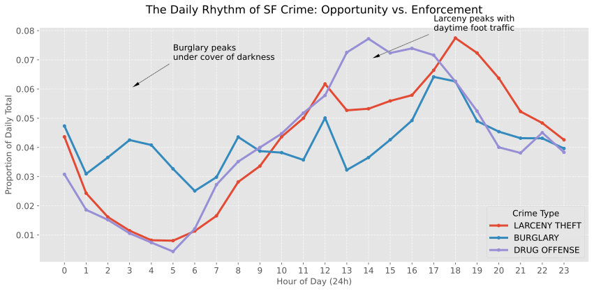

Decoupling the Rhythms of Opportunity and Enforcement in SF Crime Data
This analysis utilizes the official San Francisco Police Department (SFPD) crime incident reports, spanning from 2003 to late 2025. The data includes over 2 million records, detailing the time, location, and category of each reported incident. For this story, we focus on "Personal Focus Crimes"—a subset of categories including Larceny, Burglary, and Drug Offenses that provide the clearest window into the city's social dynamics.
San Francisco is a city of distinct rhythms. From the morning fog to the neon lights of the Mission, the city breathes in patterns that are mirrored in its crime data. But when we look closer, we find that not all crimes follow the same heartbeat. Some crimes are driven by opportunity—the simple intersection of a motivated actor and a vulnerable target. Others are driven by enforcement—the strategic choices of where and when to police.

The geographic "hotspots" of the city tell a similar story of divergence. While property crimes like Larceny are spread across every major commercial corridor and tourist landmark, enforcement-driven crimes are remarkably concentrated. This concentration often says more about the city's policing priorities and neighborhood socioeconomic boundaries than the actual prevalence of illegal activity across the 49 square miles of San Francisco.
Perhaps the most compelling evidence of this decoupling is found in the long-term trends. As we transitioned through the COVID-19 pandemic and into the "new normal" of 2024-2025, the trends for property crime and drug enforcement began to move independently of one another. This "decoupling" serves as a critical reminder that a "spike" in crime statistics can often be a "spike" in police reporting or policy shifts.
As we interpret these patterns, we must heed the warnings of researchers like Richardson et al. (2019). Crime data is never a perfect mirror of reality; it is a mirror of recorded incidents. When we see a cluster of drug arrests, we are seeing the output of a policing system that chooses to look in specific places at specific times. To call this "crime" without acknowledging "enforcement" is to tell only half the story. As data narrators, our responsibility is to show not just the "what," but the "why"—acknowledging the limitations of our datasets and the human decisions that create every single row in our CSV files.